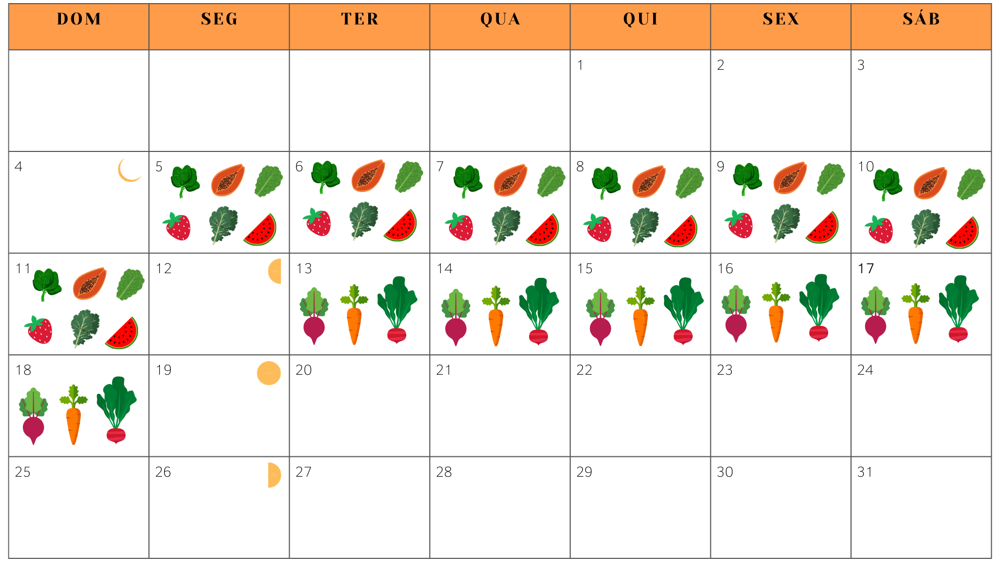

Plantar em datas específicas pode ajudar a maximizar o sucesso das suas culturas, levando em conta o ciclo lunar e as condições climáticas. Aqui temos um sugestão de plantio baseada nas fases da lua para agosto de 2024, que podem influenciar o crescimento das plantas:
Plantar em datas específicas pode ajudar a maximizar o sucesso das suas culturas, levando em conta o ciclo lunar e as condições climáticas. Aqui está uma sugestão baseada nas fases da lua para agosto de 2024, que podem influenciar o crescimento das plantas:
Recomendações de cultivo referente ao mês de Agosto de 2024 na região Oeste do Paraná